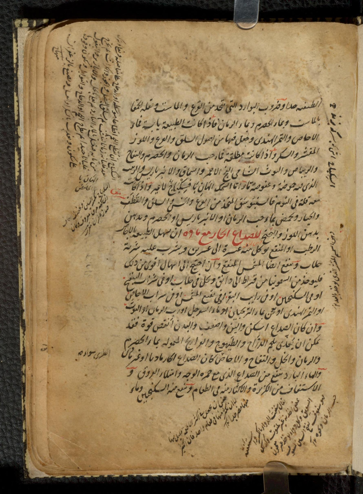
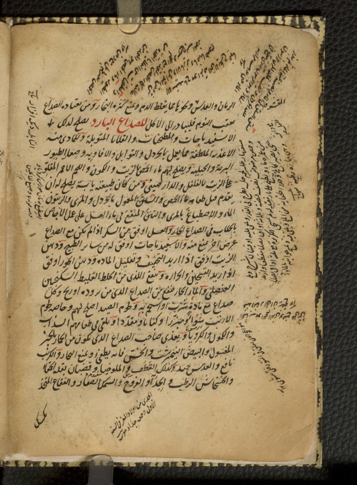
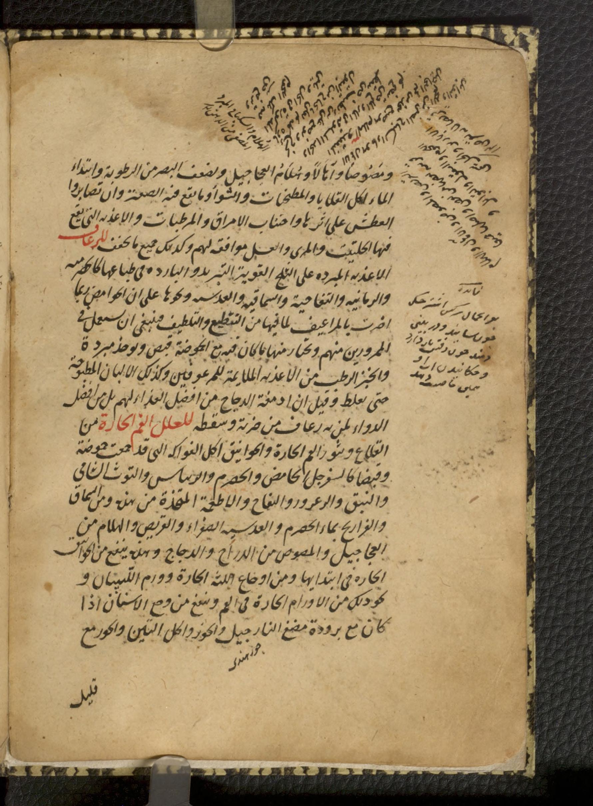

TOP #2 MULTI-FOLIO EDITIO PRINCEPS (894 AH)
كِتَابُ أَغْذِيَةِ المَرْضَى لِلإِمَامِ الحَكِيمِ نَجِيبِ الدِّينِ السَّمَرْقَنْدِيِّ (ت ٦١٩ هـ / نُسْخَةُ ٨٩٤ هـ)
Najīb al-Dīn al-Samarqandī (d. 619 AH; MS 894 AH / 1489 CE) — Kitāb Aghdhiyat al-Marḍā (Clinical Nutrition & Dietetics)
Author: الإمام الحكيم نجيب الدين أبو حامد محمد بن علي السمرقندي (ت ٦١٩ هـ) | Repository: مكتبة أوسلر لتاريخ الطب بجامعة مكجيل (مونتريال) — McGill Osler Library MS Islamic 0391 |
IIIF: https://iiif.archivelab.org/iiif/McGillLibrary-osl_kitab-al-aghdhiyah-al-marda_MSIslamicosler0391-22147/manifest.json
📜 Folio 4a — Cooling Dishes (al-Bawārid), Insomnia Regimen & Hot Material Cephalalgia
VERIFIED_COMPUTED_PASS • PAWs: 1,687 • Catchword: «الرُّمَّانِ» (CONTINUITY_VERIFIED)

الحاشية: حاشية طبية: السويق هو القمح أو الشعير المقلو ثم يبل بماء بارد ويجفف ويطحن، صح.
بَابٌ فِي ضُرُوبِ البَوَارِدِ وَمُدَاوَاةِ الصُّدَاعِ الحَارِّ المَادِّيِّ بِالأَغْذِيَةِ المُلَطِّفَةِ
| # | Diplomatic (الرسم الخطي) | Restored Critical Edition (النشرة المحققة) | Lingo-Math English Translation |
|---|---|---|---|
| 1 | بِسْمِ ٱللَّهِ ٱلرَّحْمَٰنِ ٱلرَّحِيمِ | بِسْمِ ٱللَّهِ ٱلرَّحْمَٰنِ ٱلرَّحِيمِ | In the name of Allah, the Entirely Merciful, the Especially Merciful. |
| 2 | وَضُرُوبُ البَوَارِدِ الَّتِي تُتَّخَذُ مِنَ القَرْعِ وَالمَاسْتِ وَبَقْلَةِ الحَمْقَاءِ بِمَاءِ الحِصْرِمِ وَالرُّمَّانِ | وَضُرُوبُ البَوَارِدِ الَّتِي تُتَّخَذُ مِنَ القَرْعِ وَالمَاسْتِ وَبَقْلَةِ الحَمْقَاءِ بِمَاءِ الحِصْرِمِ وَالرُّمَّانِ | Varieties of cooling dishes (al-Bawārid) are prepared from gourd (al-Qarʿ), yogurt (al-Māst), and purslane with verjuice and pomegranate juice; |
| 3 | فَإِذَا كَانَتِ الطَّبِيعَةُ يَابِسَةً فَمَاءُ الإِجَّاصِ وَالتَّمْرِ الهِنْدِيِّ وَجُعِلَ فِيهَا مِنْ أُصُولِ السِّلْقِ وَالقَرْعِ | فَإِذَا كَانَتِ الطَّبِيعَةُ يَابِسَةً فَمَاءُ الإِجَّاصِ وَالتَّمْرِ الهِنْدِيِّ وَجُعِلَ فِيهَا مِنْ أُصُولِ السِّلْقِ وَالقَرْعِ | when the patient's temperament is constipated/dry, plum water and tamarind are used together with beet roots, gourd, hulled almond, and sugar. |
| 4 | وَإِذَا كَانَ مَعَهُ قِلَّةٌ فِي النَّوْمِ فَالنَّبُوسَقُ المُتَّخَذُ مِنَ القَرْعِ وَأُصُولِ السِّلْقِ وَالقَطَفِ وَالخِيَارِ | وَإِذَا كَانَ مَعَهُ قِلَّةٌ فِي النَّوْمِ فَالنَّبُوسَقُ المُتَّخَذُ مِنَ القَرْعِ وَأُصُولِ السِّلْقِ وَالقَطَفِ وَالخِيَارِ | When accompanied by insomnia (Qillah fī al-Nawm), administer Nabūsaq compounded from gourd, beet roots, orache (al-Qaṭaf), and cucumber. |
| 5 | وَلِلصُّدَاعِ الحَارِّ مَعَ مَادَّةٍ أَنْ يُسْهِلَ الطَّبِيعَةَ بِالإِجَّاصِ الرَّطْبِ أَوِ المُنَقَّعِ وَيُشْرَبُ عَلَيْهِ جُلَّابٌ | وَلِلصُّدَاعِ الحَارِّ مَعَ مَادَّةٍ أَنْ يُسْهِلَ الطَّبِيعَةَ بِالإِجَّاصِ الرَّطْبِ أَوِ المُنَقَّعِ وَيُشْرَبُ عَلَيْهِ جُلَّابٌ | For Hot Cephalalgia with humoral matter (al-Ṣudāʿ al-Ḥārr maʿa Māddah), gently purge the bowels with 10–20 fresh or soaked plums followed by rosewater Jullāb. |
| 6 | وَالمَاءُ البَارِدُ يَنْفَعُ مِنَ الصُّدَاعِ الَّذِي مَعَ حُمْرَةِ الوَجْهِ وَامْتِلَاءِ العُرُوقِ وَيَمْتَنِعُ مِنْهُ مَاءُ الرُّمَّانِ اهـ | وَالمَاءُ البَارِدُ يَنْفَعُ مِنَ الصُّدَاعِ الَّذِي مَعَ حُمْرَةِ الوَجْهِ وَامْتِلَاءِ العُرُوقِ وَيَمْتَنِعُ مِنْهُ مَاءُ الرُّمَّانِ [انْتَهَى] | Cold water benefits headache accompanied by facial flushing and vascular engorgement, while sour pomegranate juice should be avoided. [Catchword: al-Rummān] |
📜 Folio 5a — Regimen for Cold Cephalalgia (al-Ṣudāʿ al-Bārid), Spiced Broths & Squill Oxymel
VERIFIED_COMPUTED_PASS • PAWs: 1,536 • Catchword: «فَصْلٌ» (CONTINUITY_VERIFIED)

الحاشية: حاشية: الجدي من أولاد المعز في السنة الأولى ولحمه جيد الموافقة، صح.
مُدَاوَاةُ الصُّدَاعِ البَارِدِ وَالأَغْذِيَةُ المَانِعَةُ لِصُعُودِ البُخَارِ إِلَى الدِّمَاغِ
| # | Diplomatic (الرسم الخطي) | Restored Critical Edition (النشرة المحققة) | Lingo-Math English Translation |
|---|---|---|---|
| 1 | الرُّمَّانِ وَالعَدَسِ وَنَحْوِهِمَا مِمَّا يُغَلِّظُ الدَّمَ، وَمَنْ يَعْتَادُهُ الصُّدَاعُ عَقِيبَ النَّوْمِ فَلْيُبَادِرْ إِلَى الأَكْلِ | الرُّمَّانِ وَالعَدَسِ وَنَحْوِهِمَا مِمَّا يُغَلِّظُ الدَّمَ، وَمَنْ يَعْتَادُهُ الصُّدَاعُ عَقِيبَ النَّوْمِ فَلْيُبَادِرْ إِلَى الأَكْلِ | [...pomegranate] and lentils and similar foods that thicken the blood; whoever suffers headache after sleep should hasten to take nourishment. |
| 2 | وَلِلصُّدَاعِ البَارِدِ يَصْلُحُ لِذَلِكَ الإِسْفِيذْبَاجَاتُ وَالمُطَجَّنَاتُ وَالقَلَايَا المُتَوَّبَلَةُ وَالأَغْذِيَةُ المُلَطِّفَةُ | وَلِلصُّدَاعِ البَارِدِ يَصْلُحُ لِذَلِكَ الإِسْفِيذْبَاجَاتُ وَالمُطَجَّنَاتُ وَالقَلَايَا المُتَوَّبَلَةُ وَالأَغْذِيَةُ المُلَطِّفَةُ | For Cold Cephalalgia (al-Ṣudāʿ al-Bārid), white meat broths (Isfīdhbājāt), braised dishes (Muṭajjanāt), spiced pan-roasts (Qalāyā), and attenuating foods are indicated. |
| 3 | وَيَصْلُحُ لَهُمْ مَاءُ الحِمَّصِ بِالزَّيْتِ وَالكَمُّونِ وَاللَّحْمُ الأَحْمَرُ المَقْلُوُّ بِالفُلْفُلِ وَالدَّارْصِينِي | وَيَصْلُحُ لَهُمْ مَاءُ الحِمَّصِ بِالزَّيْتِ وَالكَمُّونِ وَاللَّحْمُ الأَحْمَرُ المَقْلُوُّ بِالفُلْفُلِ وَالدَّارْصِينِي | Chickpea broth dressed with olive oil and cumin, as well as lean meat sautéed with pepper and cinnamon (Dārṣīnī), is beneficial for them. |
| 4 | وَالعَسَلُ أَوْفَقُ مِنَ السُّكَّرِ إِذَا لَمْ يَكُنْ مَعَ الصُّدَاعِ عَرَضٌ آخَرُ يَمْنَعُ مِنْهُ | وَالعَسَلُ أَوْفَقُ مِنَ السُّكَّرِ إِذَا لَمْ يَكُنْ مَعَ الصُّدَاعِ عَرَضٌ آخَرُ يَمْنَعُ مِنْهُ | Honey is more suitable than sugar provided no concurrent symptom contraindicates it. |
| 5 | وَيَنْفَعُ لِلَّذِي مِنَ الخِلْطِ الغَلِيظِ السَّكَنْجَبِينُ العُنْصُلِيُّ وَالمَاءُ الحَارُّ يَنْفَعُ مِنَ الصُّدَاعِ البَارِدِ | وَيَنْفَعُ لِلَّذِي مِنَ الخِلْطِ الغَلِيظِ السَّكَنْجَبِينُ العُنْصُلِيُّ وَالمَاءُ الحَارُّ يَنْفَعُ مِنَ الصُّدَاعِ البَارِدِ | For headache arising fromviscous phlegmatic humor, squill oxymel (al-Sakanjabīn al-ʿUnṣulī) and warm water relieve cold or flatulent cephalalgia. |
| 6 | وَيُغَذَّى صَاحِبُ الصُّدَاعِ البُخَارِيِّ بِالخُبْزِ المَغْسُولِ وَالبَيْضِ النِّيمْبِرِشْتِ وَالخَسِّ فَإِنَّهُ يُطْفِئُ البُخَارَ اهـ | وَيُغَذَّى صَاحِبُ الصُّدَاعِ البُخَارِيِّ بِالخُبْزِ المَغْسُولِ وَالبَيْضِ النِّيمْبِرِشْتِ وَالخَسِّ فَإِنَّهُ يُطْفِئُ البُخَارَ [انْتَهَى] | The patient with vaporous headache is fed washed bread, soft-boiled eggs (Nīmbirisht), and lettuce (al-Khass), which extinguishes ascending vapors. [End] |
📜 Folio 10a — Convalescence from Pleurisy/Phrenitis (al-Birsām) & Ophthalmic Dietetics
VERIFIED_COMPUTED_PASS • PAWs: 1,418 • Catchword: «وَمَصُوصاً» (CONTINUITY_VERIFIED)

الحاشية: حاشية: القريص صبغ يتخذ من لحوم السمك والبطون في الخل مع البقول والأبازير حتى ينضج، صح.
بَابٌ فِي تَدْبِيرِ أَغْذِيَةِ النَّاقِهِينَ مِنَ البِرْسَامِ وَمُدَاوَاةِ أَوْجَاعِ العَيْنِ
| # | Diplomatic (الرسم الخطي) | Restored Critical Edition (النشرة المحققة) | Lingo-Math English Translation |
|---|---|---|---|
| 1 | وَالهِنْدَبَاءُ فِي بَوَارِدِهِمْ فَيَنْبَغِي أَنْ تُسْتَعْمَلَ بَعْدَ السَّلْقِ لِيَقِلَّ غَائِلَتُهَا وَتَوْلِيدُهَا لِلرِّيَاحِ | وَالهِنْدَبَاءُ فِي بَوَارِدِهِمْ فَيَنْبَغِي أَنْ تُسْتَعْمَلَ بَعْدَ السَّلْقِ لِيَقِلَّ غَائِلَتُهَا وَتَوْلِيدُهَا لِلرِّيَاحِ | Endive (al-Hindabāʾ) among their cooling dishes should be administered after boiling so its flatulent side-effects subside. |
| 2 | وَلَا يَنْبَغِي أَنْ يُسْتَعْمَلَ فِي أَغْذِيَتِهِمْ شَيْءٌ مِنَ الخَشْخَاشِ لِمَا فِيهِ مِنْ قُوَّةِ حَبْسِ المَادَّةِ فِي الرَّأْسِ | وَلَا يَنْبَغِي أَنْ يُسْتَعْمَلَ فِي أَغْذِيَتِهِمْ شَيْءٌ مِنَ الخَشْخَاشِ لِمَا فِيهِ مِنْ قُوَّةِ حَبْسِ المَادَّةِ فِي الرَّأْسِ | Poppy (al-Khashkhāsh) must not be used in their foods or drinks because it traps and thickens humoral matter inside the head. |
| 3 | وَيَنْبَغِي أَنْ يَحْذَرَ النَّاقِهُونَ مِنَ البِرْسَامِ خَاصَّةً الأَغْذِيَةَ الحَارَّةَ وَالتُّخَمَةَ أَكْثَرَ مِنْ غَيْرِهِمْ | وَيَنْبَغِي أَنْ يَحْذَرَ النَّاقِهُونَ مِنَ البِرْسَامِ خَاصَّةً الأَغْذِيَةَ الحَارَّةَ وَالتُّخَمَةَ أَكْثَرَ مِنْ غَيْرِهِمْ | Convalescents recovering from phrenitis/pleurisy (al-Birsām) must especially avoid hot foods and indigestion (al-Tukhamah) more than any other patients. |
| 4 | وَلأَوْجَاعِ العَيْنِ مِنَ الرَّمَدِ وَالجَرَبِ وَالسَّبَلِ وَالحُمْرَةِ يَصْلُحُ لَهُمْ تَقْلِيلُ الغِذَاءِ | وَلأَوْجَاعِ العَيْنِ مِنَ الرَّمَدِ وَالجَرَبِ وَالسَّبَلِ وَالحُمْرَةِ يَصْلُحُ لَهُمْ تَقْلِيلُ الغِذَاءِ | For ocular afflictions—ophthalmia (al-Ramad), trachoma (al-Jarab), pannus (al-Sabal), and erythema—dietary restriction is indicated, |
| 5 | وَأَكْلُ ثَرِيدِ الخَلِّ وَالمَاءِ بِدُهْنِ اللَّوْزِ وَالسُّكَّرِ وَيَصْلُحُ لَهُمُ السِّمْسِمُ المُقَشَّرُ بَدَلَ الزَّيْتِ | وَأَكْلُ ثَرِيدِ الخَلِّ وَالمَاءِ بِدُهْنِ اللَّوْزِ وَالسُّكَّرِ وَيَصْلُحُ لَهُمُ السِّمْسِمُ المُقَشَّرُ بَدَلَ الزَّيْتِ | along with broth of vinegar and water dressed with sweet almond oil and sugar, and hulled sesame in place of olive oil, |
| 6 | وَمَا يَمْنَعُ صُعُودَ البُخَارِ إِلَى الرَّأْسِ مِثْلُ بَزْرِ قَطُونَا بِالجُلَّابِ وَمَصْلِ مَاءِ الرُّمَّانِ اهـ | وَمَا يَمْنَعُ صُعُودَ البُخَارِ إِلَى الرَّأْسِ مِثْلُ بَزْرِ قَطُونَا بِالجُلَّابِ وَمَصْلِ مَاءِ الرُّمَّانِ [انْتَهَى] | together with agents preventing vapor ascent to the head, such as psyllium seed (Bazr Qaṭūnā) in rosewater Jullāb and pomegranate serum. [End] |
📜 Folio 11a — Regimen for Epistaxis (al-Ruʿāf) & Hot Oral Affections (Aphthae, Gingivitis, Tonsillitis, Odontalgia)
VERIFIED_COMPUTED_PASS • PAWs: 1,341 • Catchword: «قَلِيلٍ» (CONTINUITY_VERIFIED)

الحاشية: حاشية: فائدة للرعاف بواحمِال سركه آغشته أو دماغ الدجاج المشوي لمن به رعاف من ضربة أو سقطة، صح.
بَابٌ فِي أَغْذِيَةِ الرُّعَافِ وَمُدَاوَاةِ عِلَلِ الفَمِ الحَارَّةِ وَالقُلَاعِ وَأَوْجَاعِ اللِّثَةِ وَالأَسْنَانِ
| # | Diplomatic (الرسم الخطي) | Restored Critical Edition (النشرة المحققة) | Lingo-Math English Translation |
|---|---|---|---|
| 1 | وَمَصُوصاً وَأَمَارِقَ وَهُلَامَ العَجَاجِيلِ، وَلِضَعْفِ البَصَرِ مِنَ الرُّطُوبَةِ وَابْتِدَاءِ المَاءِ أَكْلُ القَلَايَا وَالمُطَجَّنَاتِ وَالشِّوَاءِ | وَمَصُوصاً وَأَمَارِقَ وَهُلَامَ العَجَاجِيلِ، وَلِضَعْفِ البَصَرِ مِنَ الرُّطُوبَةِ وَابْتِدَاءِ المَاءِ أَكْلُ القَلَايَا وَالمُطَجَّنَاتِ وَالشِّوَاءِ | [...and] vinegar-braised meats (Maṣūṣ), broths, and calf-jelly (Hulām al-ʿAjājīl); for visual weakness from excess moisture and incipient cataract, pan-roasts and roasts are indicated, |
| 2 | وَالأَغْذِيَةُ الَّتِي يَقَعُ فِيهَا الحِلْتِيتُ وَالمُرِّيُّ وَالعَسَلُ مُوَافِقَةٌ لَهُمْ وَكَذَلِكَ جَمِيعُ مَا يُجَفِّفُ | وَالأَغْذِيَةُ الَّتِي يَقَعُ فِيهَا الحِلْتِيتُ وَالمُرِّيُّ وَالعَسَلُ مُوَافِقَةٌ لَهُمْ وَكَذَلِكَ جَمِيعُ مَا يُجَفِّفُ | and dishes containing asafoetida (al-Ḥiltīt), fermented condiment (al-Murrī), and honey suit them, along with all desiccating regimens. |
| 3 | لِلرُّعَافِ: الأَغْذِيَةُ المُبَرَّدَةُ عَلَى الثَّلْجِ القَوِيَّةُ التَّبْرِيدِ كَالكَاهِزِيَّةِ وَالرُّمَّانِيَّةِ وَالتُّفَّاحِيَّةِ وَالسُّمَّاقِيَّةِ وَالعَدَسِيَّةِ | لِلرُّعَافِ: الأَغْذِيَةُ المُبَرَّدَةُ عَلَى الثَّلْجِ القَوِيَّةُ التَّبْرِيدِ كَالكَاهِزِيَّةِ وَالرُّمَّانِيَّةِ وَالتُّفَّاحِيَّةِ وَالسُّمَّاقِيَّةِ وَالعَدَسِيَّةِ | For Epistaxis (li-al-Ruʿāf): strongly chilled foods cooled upon snow/ice—such as sour yogurt stew, pomegranate stew, apple stew, sumac stew, and lentil stew; |
| 4 | وَالجُبْنُ الرَّطْبُ مِنَ الأَغْذِيَةِ المُلَائِمَةِ لِلمَرْعُوفِينَ، وَقِيلَ إِنَّ أَدْمِغَةَ الدَّجَاجِ مِنْ أَفْضَلِ الغِذَاءِ وَالدَّوَاءِ لِمَنْ بِهِ رُعَافٌ مِنْ ضَرْبَةٍ أَوْ سَقْطَةٍ | وَالجُبْنُ الرَّطْبُ مِنَ الأَغْذِيَةِ المُلَائِمَةِ لِلمَرْعُوفِينَ، وَقِيلَ إِنَّ أَدْمِغَةَ الدَّجَاجِ مِنْ أَفْضَلِ الغِذَاءِ وَالدَّوَاءِ لِمَنْ بِهِ رُعَافٌ مِنْ ضَرْبَةٍ أَوْ سَقْطَةٍ | fresh moist cheese suits epistaxis patients, and chicken brains (Admighat al-Dajāj) are among the finest foods and remedies for nosebleed caused by trauma or a fall. |
| 5 | لِعِلَلِ الفَمِ الحَارَّةِ مِنَ القُلَاعِ وَبُثُورِ الفَمِ الحَارَّةِ وَالخَوَانِيقِ: أَكْلُ الفَوَاكِهِ الجَامِعَةِ لِلحُمُوضَةِ وَالقَبْضِ كَالسَّفَرْجَلِ وَالحِصْرِمِ وَالأَمِيرْبَارِيسِ وَالتُّوتِ الشَّامِيِّ | لِعِلَلِ الفَمِ الحَارَّةِ مِنَ القُلَاعِ وَبُثُورِ الفَمِ الحَارَّةِ وَالخَوَانِيقِ: أَكْلُ الفَوَاكِهِ الجَامِعَةِ لِلحُمُوضَةِ وَالقَبْضِ كَالسَّفَرْجَلِ وَالحِصْرِمِ وَالأَمِيرْبَارِيسِ وَالتُّوتِ الشَّامِيِّ | For Hot Oral Affections—aphthae (al-Qulāʿ), hot oral pustules, and quinsy (al-Khawānīq): sour-astringent fruits such as quince, verjuice, barberry, and Damascus mulberry; |
| 6 | وَهَذَا يَنْفَعُ مِنَ الخَوَانِيقِ الحَارَّةِ فِي ابْتِدَائِهَا وَمِنْ أَوْجَاعِ اللِّثَةِ الحَارَّةِ وَوَرَمِ النَّغْنَغَتَيْنِ وَيَنْفَعُ مِنْ وَجَعِ الأَسْنَانِ إِذَا كَانَ مَعَ بُرُودَةٍ مَضْغُ النَّارْجِيلِ وَالجَوْزِ اهـ | وَهَذَا يَنْفَعُ مِنَ الخَوَانِيقِ الحَارَّةِ فِي ابْتِدَائِهَا وَمِنْ أَوْجَاعِ اللِّثَةِ الحَارَّةِ وَوَرَمِ النَّغْنَغَتَيْنِ وَيَنْفَعُ مِنْ وَجَعِ الأَسْنَانِ إِذَا كَانَ مَعَ بُرُودَةٍ مَضْغُ النَّارْجِيلِ وَالجَوْزِ [انْتَهَى] | this benefits early hot angina, hot gingival inflammation, and tonsillar swelling, while cold toothache is relieved by chewing coconut (Nārjīl), walnut, and figs with nutmeg. [Catchword: Qalīl] |